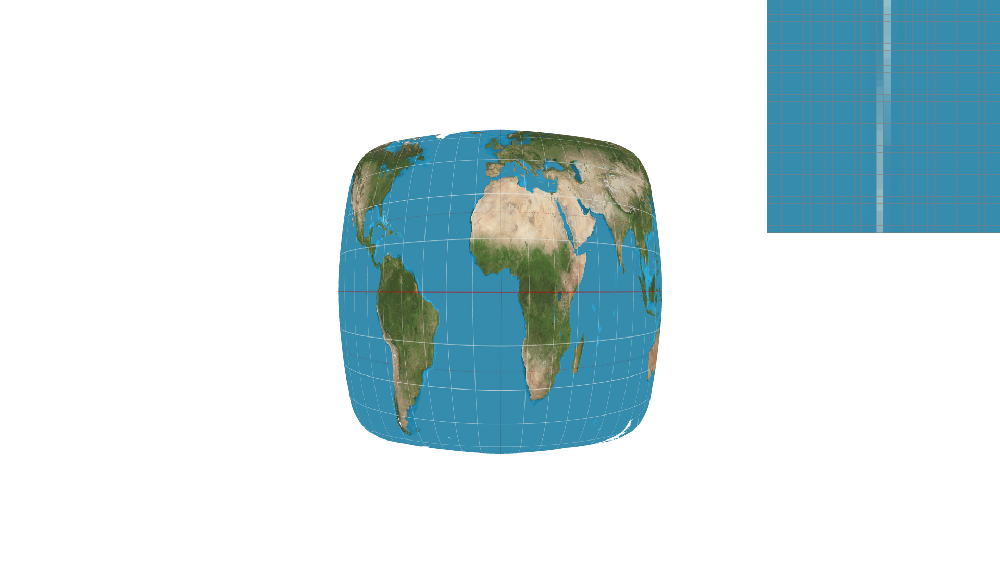

Task 1
The way we rasterize the triangles is by first determining the bounding box of the triangle to know where we want to sample from without needing to sample the whole grid. We then sample within this box and utilize the point-in-triangle test to determine if we take the sampled point or not. To do this, we do 3 line test, one for each edge of the triangle. We take the lines pertaining to (x0, y0) -> (x1, y1), (x1, y1) -> (x2, y2), (x2, y2) -> (x0, y0) and use the line equation of -(x - x0)(y1 - y0) + (y - y0)(x1 - x0) to determine if the given point (x, y) is on, below, or above the given line. We know the point is on the triangle if the point satisfies the condition that either all of the line test are >= 0 or all of the line test are <= 0. The reason for this is because if they are 0 or the same sign, this means the point is on the same side that forms the triangle within the 3 lines or is on the boundary of the triangle itself. Using this, we then accept the point if the conditions are met.
Our algorithm is no worse than one that checks each sample within the bounding box of the triangle because we define our sample space to be the max and mins of the X values for the horizontal bound and the max and mins of the Y values for the vertical bound from the triangle points. This ensures that only the largest and smallest x and y positions of the triangles are sampled meaning that we are at most sampling points within the bounding box of the triangle. For example, if we know the smallest X of a point on the triangle is 2 and the largest X from another point is 5, we would only need to sample from a horizontal range of 2-5. The same logic applies to the Y axis where we only need to consider the largest and smallest Y of the points on the triangle.

Task 2
The way our super sampling algorithm works is we first scale our sample buffer based on the frame buffer dimensions and the sampling rate. This means every sample_buffer resize must be multiplied by width * height * sample rate. We then supersample on this sample buffer by iterating through each pixel as normal, but additionally iterating through more subsamples of the pixel based on the sample rate. For example, if the sample rate is 4, we must sample 4 positions within the pixel at uniform distances. This is done by adding two more iterations to the original i, j iterations of the normal sampling and having both of them go from 0 to sqrt(sample rate). We increment the iterations by one. To get the precise fractional values of the sample, we defined x = j + (k / N) + 1/(2 * N) and y = i + (w / N) + 1/(2 * N). Essentially we iterate pixel by pixel, and within each pixel, a subsample sample_rate amount of times of uniform distance. To keep track of what subpixels corresponded to the original pixel positon, we stored the subpixels in consecutive order with respect to it’s original pixel based on an equation. This simplified the averaging process since at each original (x, y) position, we would only need to calculate the first “index” that stores it’s corresponding subpixel then iterate by the sampling rate with one more loop to get all of the subpixels. We then convert the sample buffer back to the frame buffer by taking each sample within a frame and averaging the color to have it translate to the buffer frame.

Supersampling is useful because it allows us to have much more granular levels of accuracy for what the color of a pixel is. Instead of being bound to a solid color, it allows for the pixels within the shape to have different shades of the colors to reduce aliasing. A change we made in the rasterization pipeline was to make sure we scaled all of the instances of the sample frame were scaled appropriately with the sample rate. In rasterize triangle, we had to update from only sampling pixel by pixel, to also include sampling even more granularly based on the sample rate within each pixel. Finally, in resolving the sample buffer to the frame buffer, we had to average each pixel color value based on the “subpixels” we sampled to translate the sample buffer to the frame buffer appropriately. We used supersampling to antialias the triangles by being able to sample more points on triangles that had minimal angles for example. Without any supersampling, you would see disconnected pixels from the original triangle, but antialiasing allows for a color gradient to connect all of the pixels because we are sampling more points of the triangle. This makes the triangles look nicer because the aliasing is reduced or removed.
Sample Rate = 1
Sample Rate = 4

Sample Rate = 9

Sample Rate = 16

Task 3

For our cube man, we decided to make him into a pretty ballerina. As you can see, we have him balancing on one leg with his leg sticking out in one direction and his arms forming a circle above his head. Truly an elegant pose.
Task 4
Barycentric coordinates are used to smoothly interpolate values across a triangle. If you define the values of a function (usually color) at the three vertices of a triangle and then take a sample point within the triangle, you can take the weighted average of the function value at those vertices according to how close the sample point is to each of the vertices. For example, suppose you have a triangle such that each vertex is respectively set to either be red, green, or blue. Now consider points along the edge connecting the red vertex with the blue vertex. If you use barycentric coordinates to color the point located at the midpoint of that edge, it should be ½ * red + ½ * blue = magenta. If you start from that midpoint and draw a line intersecting the green vertex (essentially, the line starting from the midpoint of the red-blue edge, and then going directly in the direction of the green vertex), you can use a similar formulation to get the interpolated color. Let’s say we take the point located at ⅓ of the length of that bisecting line. The resulting color would then be ⅓ * green + ⅔ * (½ * red + ½ blue ) = ⅓ red + ⅓ green + ⅓ blue. This point is actually the geometric center of the triangle, and as such its color is the equally-weighted average of the colors of the three vertices.


Task 5
Pixel sampling is the process of taking texels in a texture map and translating them onto the screen. For each triangle we are trying to rasterize, we have the three coordinates of the vertices in the screen space. Each of these vertices is also assigned a uv-coordinate that corresponds to the texture space. When we are sampling pixels that lie within the triangle we are trying to rasterize, we want to choose an appropriate uv-coordinate to correctly choose the right color from the texture. We interpolate the three uv-coordinates of the vertices using barycentric coordinates applied on the xy-coordinates of the vertices in screen space. This works because if we have a triangle in screen space, we know that the corresponding image in texture space will also be a triangle. The relative weightings (alpha, beta, and gamma) will be proportional going from screen space to texture space. Once we have the interpolated uv-coordinate, we either use nearest or bilinear sampling to get the corresponding texel. In nearest neighbor sampling, we take the texel in the texture map whose center is nearest to the interpolated uv-coordinate. That texel’s color value gets sent directly to the pixel we are sampling. In bilinear interpolation, we get the weighted average of the 4 nearest texels to the interpolated uv-coordinate. The contribution of each texel to the final color is weighted according to how close the interpolated uv-coordinate is to the texel’s center.
Sample Rate = 1, Nearest

Sample Rate = 1, Bilinear

Sample Rate = 16, Nearest

Sample Rate = 16, Bilinear
Sample Rate = 1, Nearest

Sample Rate = 1, Bilinear

Sample Rate = 16, Nearest

Sample Rate = 16, Bilinear

Sample Rate = 1, Nearest

Sample Rate = 1, Bilinear

Sample Rate = 16, Nearest

Sample Rate = 16, Bilinear

Sample Rate = 1, Nearest

Sample Rate = 1, Bilinear

Sample Rate = 16, Nearest

Sample Rate = 16, Bilinear

Nearest neighbor sampling tends to snap onto specific colors. If our interpolated uv-coordinate lands directly between the centers of 4 uniquely colored texels in the texture map, nearest neighbor sampling will always snap to one of the texels. Bilinear interpolation would instead take the equally-weighted average of all four texels. As a result, nearest neighbor sampling is pretty bad at getting the shape of things like curved lines in the texture map. You can see how the longitude line in the nearest neighbor sampling case snaps to either blue or white (even when the sampling rate is 16). On the other hand, the curved longitude line has a gradual gradient from white to blue according to the curve in the bilinear interpolation case.
Task 6